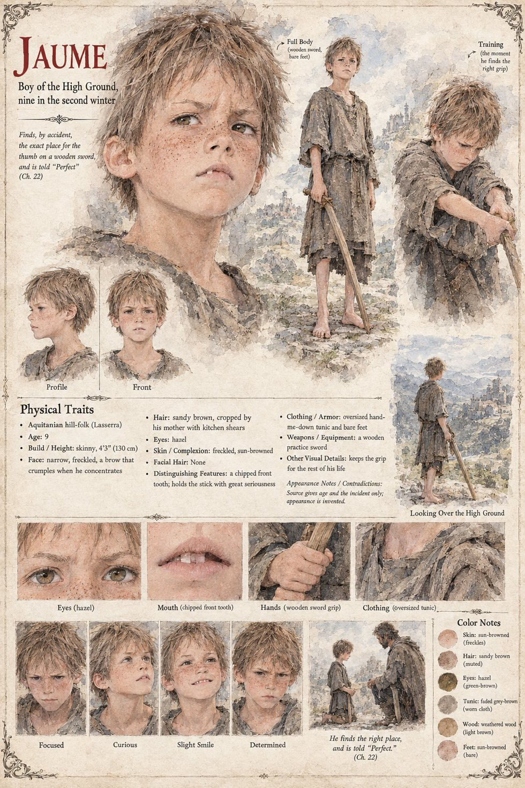

Jaume
Boy of the High Ground · 9 in the second winter
One of the boys of Lasserra who, in the long evenings of the second winter on the ridge, find in the lean old man with the long jaw a master for the sticks. He teaches them with grave patience to hold a wooden sword as one holds a thing that might one day hold one back: the grip, the breath, the settling of the thumb. He teaches them to bow to a stick before they strike it. None of them becomes a swordsman, which he regards as the most successful outcome possible.
Jaume, nine, finds by pure accident the exact place on the stick where the thumb belongs, and looks up in alarm at the sudden silence. The old man says Perfect in the speech of the High Ground, and then, under his breath, in his own, and goes out to stand a while among the goats. Nobody asks him why. The boy keeps the grip for the rest of his life and is never told what he has been given. The manuscript gives only his age and the moment; the sheet says outright that his appearance is invented.